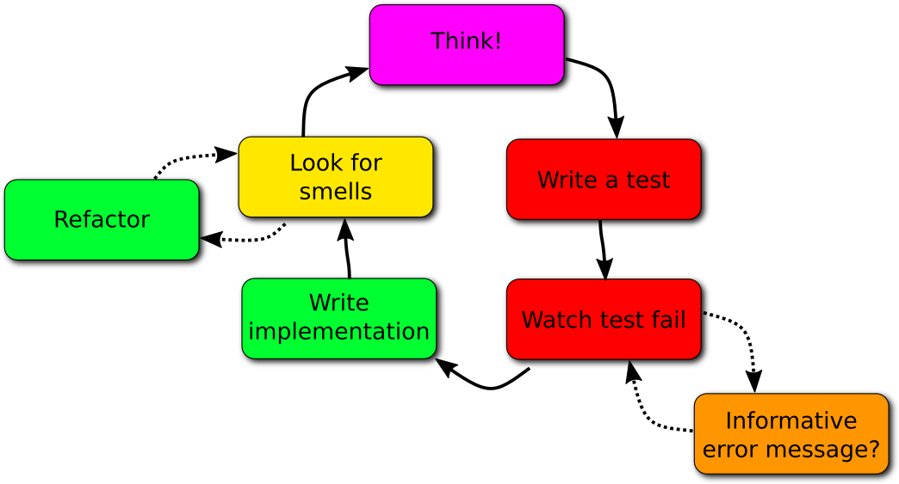

Canberra Code Dojo
@tumbarumba
#CanberraCodeDojo
Introductions
Say the three things:
- Your name
- What you do (at work or study)
- A random factoid about you personally
What does it mean?
Dojo means:
Place of learning the way
道
場
Chado Dojo
Dojo Kun
- Jin — courage, benevolence
- Gi — truth, integrity
- Rei — respect, courtesy
- Makoto — sincerity, honesty
- Yuki — courage
Kata?

Deliberate Practice
- Gladwell "10,000 hour rule"
- practise to achieve expert performance
- But practice must be:
- focussed
- goal-directed
- stretch your abilities
- give continuous feedback
- followed by self-reflection
Format
- Pair up (self-organise)
- We present the kata (problem to be solved)
- Focus for one pomodoro (25 mins)
- Stop, take 5 min break to:
- Demo your code to anyone nearby
- Get food or drink
- Reflect...
XP: eXtreme Programming
- Pair programming
- Test-Driven Development (TDD)
- Refactoring
- Simple Design
Test-Driven Development


TDD: Better
Refactoring
- Make sure all the tests pass
- Make a small change to the design of the code that improves it
- Make sure all the tests still pass
Simple Design
- Code passes all the tests
- Is clear, expressive and consistent
- Duplicates no behaviour or configuration
- Minimises the number of moving parts
First Pomodoro
- 25 minutes kata
- 5 minutes break
Hajime!
始め
Begin!
Yame!
辞め
Stop!
Stop!
- Stop typing!
- Now!
- 5 min break
Second Pomodoro
- 25 minutes kata
- 5 minutes break
Hajime!
始め
Begin!
Yame!
辞め
Stop!
Stop!
- Stop typing!
- Now!
- 5 min break
Third Pomodoro
- 25 minutes kata
- 5 minutes break
Hajime!
始め
Begin!
Yame!
辞め
Stop!
Stop!
- Stop typing!
- Now!
- 5 min break